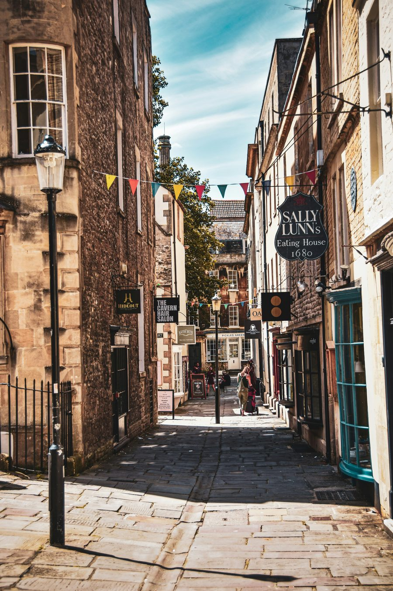

Bath is one of those places that looks almost too good to be real. The honey-coloured stone, the curved terraces, the river winding beneath Pulteney Bridge. It takes about ten minutes of walking before you stop trying to take photos and just start staring.
I lived in Bath for several years and I still notice things I hadn't seen before. That's the nature of the place. The more you know, the more there is to look at.
Here's what I'd tell anyone visiting for the first time.
Why Bath is
worth your time.
Most English cities have one or two headline attractions and then taper off quickly. Bath is different. Every street in the centre is genuinely worth looking at, because almost all of it was built in a single sustained burst of Georgian construction between roughly 1720 and 1800. It is one of the most complete Georgian cities in the world, and UNESCO designated it a World Heritage Site in 1987.
But the story starts much earlier. The only naturally heated hot spring in the United Kingdom rises in the centre of Bath, and it has been flowing at the same rate, at 46 degrees, for at least ten thousand years. The Romans built a temple and bathing complex around it in the first century AD. The Celts before them built a shrine. The city exists because of water rising from deep underground. That changes how you look at the place once you know it.
What to see.

Bath's highlights are concentrated and very walkable. Pulteney Bridge, the Abbey, the Roman Baths, the Circus, the Assembly Rooms and the Royal Crescent are all within 20 minutes of each other on foot, and each one has a proper story behind it, not just a pretty facade.
The Roman Baths are worth doing properly: book tickets in advance and allow at least 90 minutes. The sacred spring itself, green water rising from beneath the stone floor at 46 degrees, is what makes the whole city make sense.
The Royal Crescent stops most people in their tracks the first time they see it. Thirty houses in a sweeping arc 180 metres across, looking out over a lawn and the whole city below. Number 1 Royal Crescent is open as a museum if you want to see the interior.
If you want the full story behind what you are looking at, the Stepcast Bath tour covers all of it: nine stops from Pulteney Bridge to the Royal Crescent, with the history, architecture and context at each one. First three stops free.
Book Roman Baths tickets online before you go. It's cheaper and you skip the queue. Weekday mornings are the quietest time to visit.
Jane Austen
and Bath.
Austen lived in Bath from 1801 to 1806 and she did not choose to come. Her father retired here without consulting her, and by some accounts the news caused her to faint. She was not fond of the city and found its social rounds exhausting and shallow. Both Northanger Abbey and Persuasion are set here, and her ambivalence comes through clearly in both.
The Jane Austen Centre on Gay Street is well done and not too long. Even if you haven't read the novels, understanding her relationship with the city adds another layer to walking through it. The street she walked every day looks almost exactly as it did when she was here.
Where to eat.

Bath has a genuinely good food scene, and most of the best places are independents. A few worth knowing:
Landrace Bakery on Walcot Street is a local favourite: cardamom buns, excellent coffee and a warm, unhurried atmosphere. Go early if you want a table.
The Scallop Shell is the best fish in the city. Light batter, excellent sourcing, and beef dripping on the table for your chips. Book ahead, especially on weekends.
Solina Pasta in the city centre is relaxed and genuinely good: fresh pasta, focaccia and the kind of place where solo diners settle in with a book at the counter.
Yak Yeti Yak is a long-standing local favourite for Nepalese food, affordable and worth seeking out if you're bored of the obvious options.
The Elder holds a Michelin Bib Gourmand, which means serious food at a price that won't ruin your week. Worth booking if you want one proper meal while you're in the city.
For coffee, The Colombian Company is a local favourite worth seeking out, a proper independent with serious coffee.
For the most current Bath food recommendations, @batheats on Instagram covers the city's food scene properly, with over 47,000 followers and honest reviews.
Thermae Bath Spa:
go at twilight.
Britain's only natural thermal spa sits right in the centre of Bath, and it is worth an afternoon, particularly the Twilight Package. Book it for a late weekday afternoon and time your arrival so you catch the sun going down from the rooftop pool.
As the sky changes colour, the honey-coloured stone of Bath mellows further, the Abbey lights up, and you're floating in 34-degree mineral water looking out over one of England's most beautiful skylines. It is genuinely one of those experiences that's hard to describe without sounding like a brochure, but it earns the cliché.
The Twilight Package includes two hours in the spa, use of the rooftop pool, the indoor Minerva Bath and the wellness suite, plus a meal and drink at the Springs Café. Available Monday to Friday from 3pm, last entry 6pm. Book in advance as it sells out.
Bring your own flip flops. Slippers are not provided and the floors get wet. Book midweek rather than weekends for a quieter experience.
Green Park Station:
the markets.
Green Park Station is a former Victorian railway station with a beautiful vaulted glass roof, now home to some of the best markets in the city. If you time your visit right, it's worth building into your day.
The Bath Farmers' Market runs every Saturday from 9am to 1:30pm and has excellent local producers: meat, cheese, vegetables, charcuterie and more. The Friday Food Market runs from 11am to 7pm every Friday. On Saturdays there is also a general market alongside the farmers' market. For vintage and antiques, the last Sunday of the month brings the Vintage and Antiques Market.
Practical things
worth knowing.
Getting there from London: Direct trains run from London Paddington to Bath Spa roughly every 30 minutes throughout the day. The fastest services take just over an hour. Book in advance on GWR for the best prices, advance tickets can be significantly cheaper than buying on the day.
How long do you need? A full day is the minimum to do it justice. Two days lets you go at a proper pace without rushing. If you add the Thermae Bath Spa Twilight Package to your itinerary, plan to spend the late afternoon there.
When to go: Bath is busy year-round but summer weekends can feel genuinely crowded around the Roman Baths. Weekday visits in spring or autumn are quieter. The Christmas market in December is spectacular if you don't mind the crowds.
Getting around: The centre is compact and very walkable. Almost everything worth seeing is within a 20-minute walk of the station. The hills are real though. The Royal Crescent is uphill from the centre, but the walk back down gives you the best views of the city.
Driving: Don't try to park in the centre. Bath operates a Clean Air Zone and parking is limited. Park and ride works well from several sites on the edges of the city.
The thing most
visitors miss.
Almost everyone visits the Royal Crescent from the front, which is correct. Fewer people walk around to the back, where you can see the original service entrances, the coal chutes and the much plainer rear facades that reveal what the Georgian city actually looked like for the people who maintained it. The grandeur was entirely for the front. The back is a different city.
Also worth finding: Prior Park Landscape Garden, managed by the National Trust, sits on the hill south of the city and has one of the finest Palladian bridges in the country. It's a 20-minute walk from the centre and most visitors don't know it exists.
Drinks: pubs, cocktails
and beer gardens.
Bath has a genuinely good bar scene for a city its size. A few worth knowing:
Cocktails
The Dark Horse on Kingsmead Square is a subterranean cocktail bar with a seasonal menu built around local and foraged ingredients. Handmade furniture, eclectic antiques and a high-definition sound system. Voted top 3 cocktail bars in the UK by Imbibe Magazine. Over 21s only, book ahead as it fills up quickly.
Opium Bar is tucked into the vaults beneath Pulteney Bridge, which is exactly as atmospheric as it sounds. Vintage furniture, eclectic decor and well-priced cocktails in a proper hidden-gem setting. Easy to walk straight past, worth finding.
Beer gardens
The Boater sits right by Pulteney Bridge with a riverside terrace looking out over the weir. Big range of ales, proper pub food and a great atmosphere, especially on Bath Rugby match days when the city is buzzing.
Bath Brew House on James Street West has a sunny walled garden at the back, its own microbrewery on site and live music most weeks. Good for a long afternoon.
Bath Cider House has a part-covered terrace overlooking the city skyline, which means it works in most weather. Four of their ciders are made on the premises, and they do good pizzas.
Walking Bath
with a guide in your pocket.
The Stepcast Bath tour covers 9 stops from Pulteney Bridge to the Royal Crescent, with audio and written commentary at each one. Start whenever you want, stop as long as you like. First 3 stops free.
Start the Bath tour →